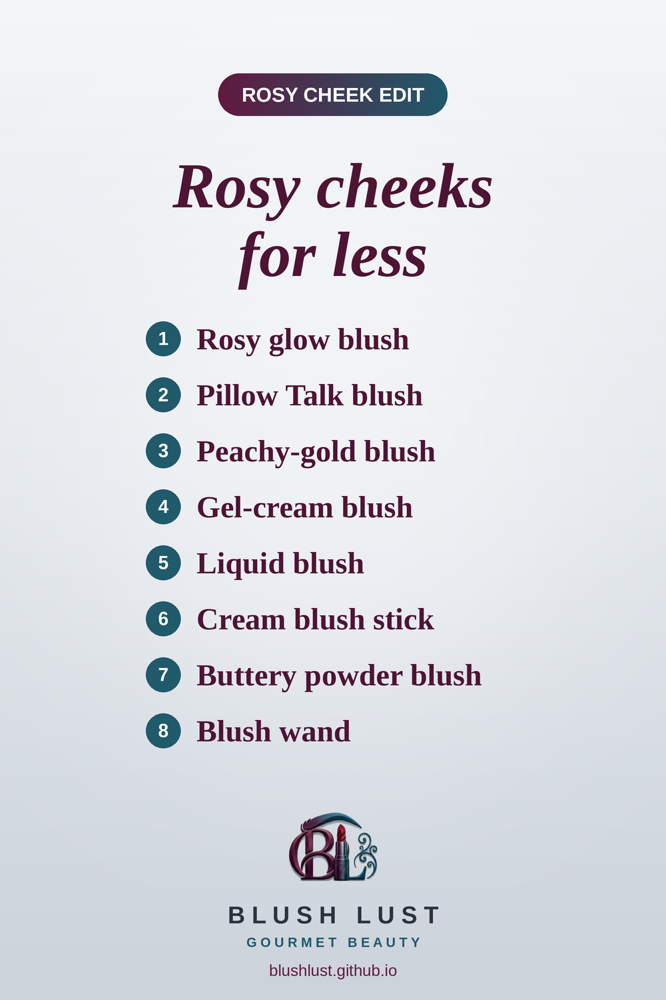

The Rosy Cheek Edit: 8 Viral Blush Dupes from the Drugstore
Rosy, just-pinched cheeks are everywhere this season. Here are the drugstore blushes that get you the look of the viral luxury picks, all on Amazon.ca.
This post contains affiliate links. If you buy through them, we may earn a small commission at no extra cost to you. As an Amazon Associate I earn from qualifying purchases.
Revlon Blush in Wild About Violet
A bright pink blush that gives cheeks a fresh, rosy glow.
Shop the dupe on Amazon.ca →Milani Baked Blush in Rosa Romantica
A soft, rosy-nude blush for a natural, healthy flush.
Shop the dupe on Amazon.ca →Milani Baked Blush in Luminoso
A peachy-pink blush with a soft golden shimmer. Luminoso has been called the go-to dupe for years.
Shop the dupe on Amazon.ca →Maybelline Cheek Heat Gel-Cream Blush
A sheer, buildable gel-cream blush you tap on with your fingers for a natural, lit-from-within flush.
Shop the dupe on Amazon.ca →e.l.f. Camo Liquid Blush
A tiny dot goes a long way with both. Highly pigmented, blendable cheek colour for that flushed, just-pinched look.
Shop the dupe on Amazon.ca →e.l.f. Soft Glam Cream Blush Stick
A creamy blush stick you swipe on and tap in for a soft, dewy flush on the go.
Shop the dupe on Amazon.ca →NYX Buttermelt Blush
A soft, buttery powder blush that blends seamlessly for a natural flush.
Shop the dupe on Amazon.ca →e.l.f. Halo Glow Blush Beauty Wand
A cushion-tip liquid blush that blends out in seconds for a soft, rosy flush.
Shop the dupe on Amazon.ca →
Prices change often — check Amazon.ca for the current price.